<meta charset="utf-8">
<title>Hero References</title>
<link rel="stylesheet" href="https://fonts.googleapis.com/css2?family=Barlow+Condensed:wght@600;700&family=Source+Sans+3:wght@400;600;700&display=swap">
<style>
:root{--bg:#F1F0EA;--card:#FFFFFF;--line:#D8D6CC;--ink:#1B1E1A;--mute:#5F665D;--acc:#2A4D6E;--ok:#1F6B3A;--ok-bg:#E1EFE4;--warn:#9A6A16;--warn-bg:#F5EAD3;--bad:#B3372B;--bad-bg:#F4E1DD;--bezel:#15171A;--disp:'Barlow Condensed','Arial Narrow',Impact,sans-serif;--body:'Source Sans 3','Helvetica Neue',Arial,sans-serif}
@media (prefers-color-scheme: dark){:root:not([data-theme="light"]){--bg:#15181A;--card:#1E2226;--line:#2D3338;--ink:#ECEDE8;--mute:#9BA39C;--acc:#8DB4DA;--ok:#5BBE7C;--ok-bg:#1C3324;--warn:#D9A84A;--warn-bg:#36301F;--bad:#E5776A;--bad-bg:#3A221E;--bezel:#0B0C0E}}
:root[data-theme="dark"]{--bg:#15181A;--card:#1E2226;--line:#2D3338;--ink:#ECEDE8;--mute:#9BA39C;--acc:#8DB4DA;--ok:#5BBE7C;--ok-bg:#1C3324;--warn:#D9A84A;--warn-bg:#36301F;--bad:#E5776A;--bad-bg:#3A221E;--bezel:#0B0C0E}
*{box-sizing:border-box}body{margin:0;background:var(--bg);color:var(--ink);font:16px/1.4 var(--body);padding:16px 12px 60px}
main{max-width:1320px;margin:0 auto}h1{font:700 40px/0.95 var(--disp);text-transform:uppercase;margin:4px 0 4px}.lede{color:var(--mute);font-size:15px;margin:0 0 16px;max-width:60ch}
.grid{display:grid;grid-template-columns:repeat(auto-fill,minmax(360px,1fr));gap:22px 18px;justify-items:center}
.phone{margin:0;width:100%;max-width:400px}
figcaption{display:flex;align-items:center;gap:8px;flex-wrap:wrap;margin:0 0 8px;padding:0 4px}.name{font:600 21px/1 var(--disp);flex:1 1 auto}
.tag{font:700 10.5px/1 var(--body);letter-spacing:.06em;text-transform:uppercase;padding:4px 6px;border-radius:5px}.tag.ok{background:var(--ok-bg);color:var(--ok)}.tag.warn{background:var(--warn-bg);color:var(--warn)}.tag.bad{background:var(--bad-bg);color:var(--bad)}
.go{display:inline-flex;align-items:center;min-height:32px;padding:0 10px;border-radius:7px;border:1px solid var(--line);color:var(--acc);font-weight:700;text-decoration:none;font-size:14px}
.frame{background:var(--bezel);border-radius:44px;padding:14px;box-shadow:0 12px 30px rgba(0,0,0,.25)}
iframe{display:block;width:100%;aspect-ratio:390/844;border:0;border-radius:32px;background:#fff}
@media (max-width:420px){body{padding:12px 8px}.frame{padding:8px;border-radius:30px}iframe{border-radius:22px}}
</style><main><h1>Hero references</h1><p class="lede">Fifteen small-business heroes at phone width, captured live today. Most win on the mark, the type or one color, not on photography. Tap Open to see the real page move.</p><div class="grid"><figure class="phone"><figcaption><span class="name">1. Dick&#x27;s Drive-In</span><a class="go" href="https://www.ddir.com" target="_blank" rel="noopener">Open</a></figcaption><div class="frame">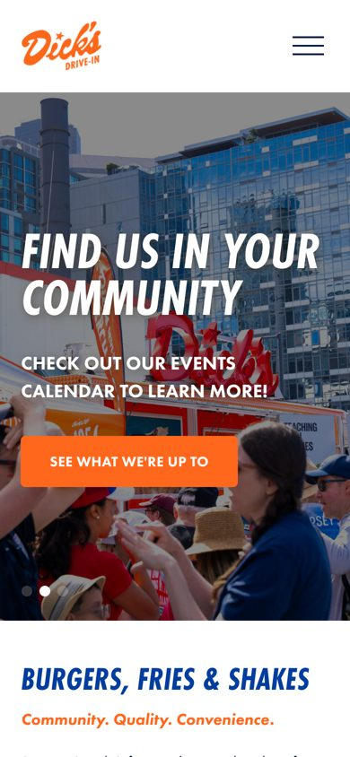</div><p class="note" style="font-size:13px;color:var(--mute);margin:8px 4px 0;line-height:1.35"><b style="color:var(--ink)">Seattle burgers, the sign is the brand.</b> The neon sign is the brand; big type, one button, photo of real customers.</p></figure><figure class="phone"><figcaption><span class="name">2. Un Bien</span><a class="go" href="https://www.unbienseattle.com" target="_blank" rel="noopener">Open</a></figcaption><div class="frame">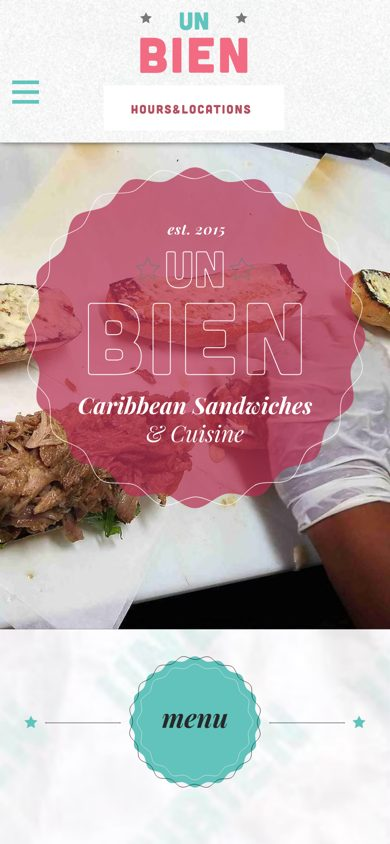</div><p class="note" style="font-size:13px;color:var(--mute);margin:8px 4px 0;line-height:1.35"><b style="color:var(--ink)">Caribbean sandwiches, badge logo.</b> Badge logo over a blurred sandwich photo. Almost exactly our mark-through-blur.</p></figure><figure class="phone"><figcaption><span class="name">3. Marination</span><a class="go" href="https://www.marinationmobile.com" target="_blank" rel="noopener">Open</a></figcaption><div class="frame">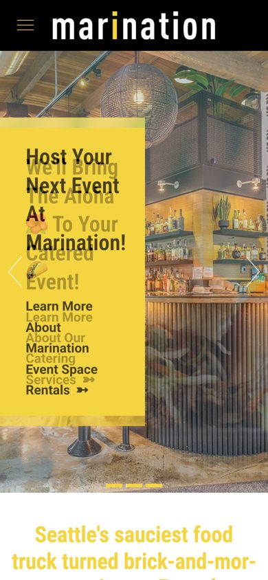</div><p class="note" style="font-size:13px;color:var(--mute);margin:8px 4px 0;line-height:1.35"><b style="color:var(--ink)">Hawaiian-Korean, food truck roots.</b> One color block with the pitch in it over the room. Loud on purpose.</p></figure><figure class="phone"><figcaption><span class="name">4. Frankie &amp; Jo&#x27;s</span><a class="go" href="https://www.frankieandjos.com" target="_blank" rel="noopener">Open</a></figcaption><div class="frame">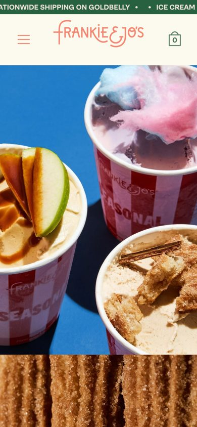</div><p class="note" style="font-size:13px;color:var(--mute);margin:8px 4px 0;line-height:1.35"><b style="color:var(--ink)">ice cream shop, Seattle.</b> Product photo fills the frame, tiny wordmark. The cups do the talking.</p></figure><figure class="phone"><figcaption><span class="name">5. Molly Moon&#x27;s</span><a class="go" href="https://www.mollymoon.com" target="_blank" rel="noopener">Open</a></figcaption><div class="frame">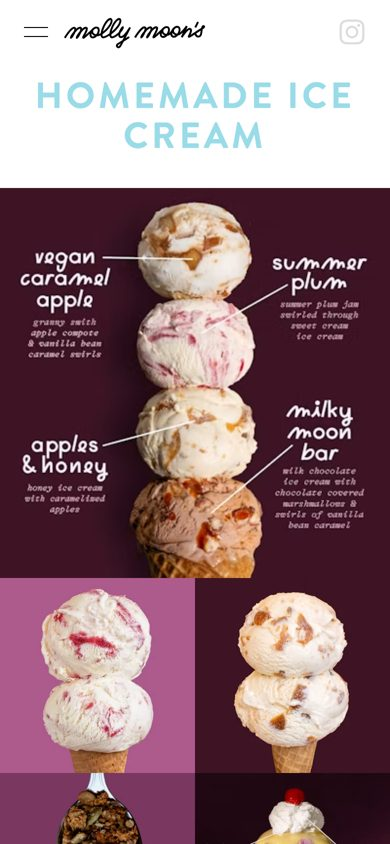</div><p class="note" style="font-size:13px;color:var(--mute);margin:8px 4px 0;line-height:1.35"><b style="color:var(--ink)">ice cream shops, Seattle.</b> Illustrated menu as the hero, hand-lettered labels. No photographer needed.</p></figure><figure class="phone"><figcaption><span class="name">6. Mighty-O Donuts</span><a class="go" href="https://mightyo.com" target="_blank" rel="noopener">Open</a></figcaption><div class="frame">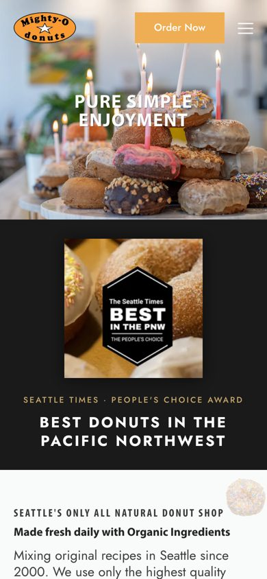</div><p class="note" style="font-size:13px;color:var(--mute);margin:8px 4px 0;line-height:1.35"><b style="color:var(--ink)">donut shop, Seattle.</b> Mark in the corner, one photo, one line. Plain and confident.</p></figure><figure class="phone"><figcaption><span class="name">7. Heart Coffee</span><a class="go" href="https://www.heartroasters.com" target="_blank" rel="noopener">Open</a></figcaption><div class="frame">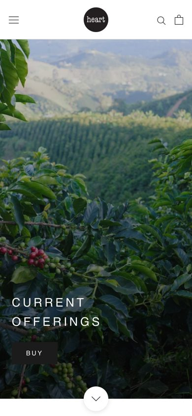</div><p class="note" style="font-size:13px;color:var(--mute);margin:8px 4px 0;line-height:1.35"><b style="color:var(--ink)">Portland roaster.</b> Full-bleed photo, two words. Almost nothing on it.</p></figure><figure class="phone"><figcaption><span class="name">8. Canon</span><a class="go" href="https://www.canonseattle.com" target="_blank" rel="noopener">Open</a></figcaption><div class="frame">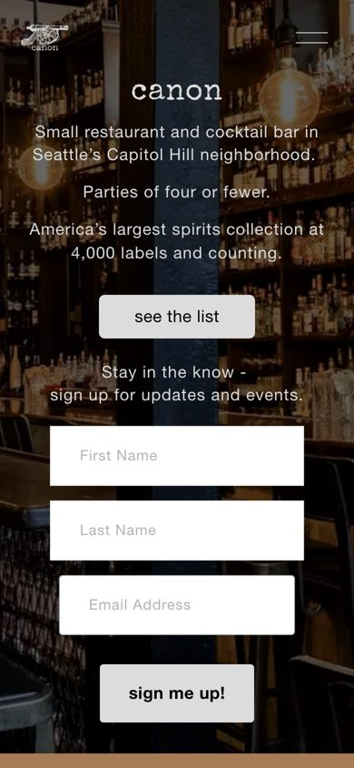</div><p class="note" style="font-size:13px;color:var(--mute);margin:8px 4px 0;line-height:1.35"><b style="color:var(--ink)">Seattle cocktail bar.</b> Dark room, wordmark and a paragraph. The bar&#x27;s own bottles are the ground.</p></figure><figure class="phone"><figcaption><span class="name">9. Bathtub Gin &amp; Co</span><a class="go" href="https://www.bathtubginseattle.com" target="_blank" rel="noopener">Open</a></figcaption><div class="frame">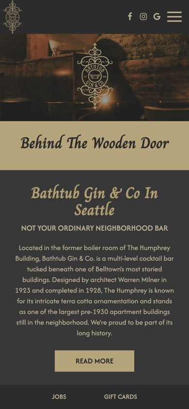</div><p class="note" style="font-size:13px;color:var(--mute);margin:8px 4px 0;line-height:1.35"><b style="color:var(--ink)">Seattle cocktail bar.</b> Tin-tile ground, script name, story block. Speakeasy mood without a hero photo.</p></figure><figure class="phone"><figcaption><span class="name">10. Pike Place Chowder</span><a class="go" href="https://www.pikeplacechowder.com" target="_blank" rel="noopener">Open</a></figcaption><div class="frame">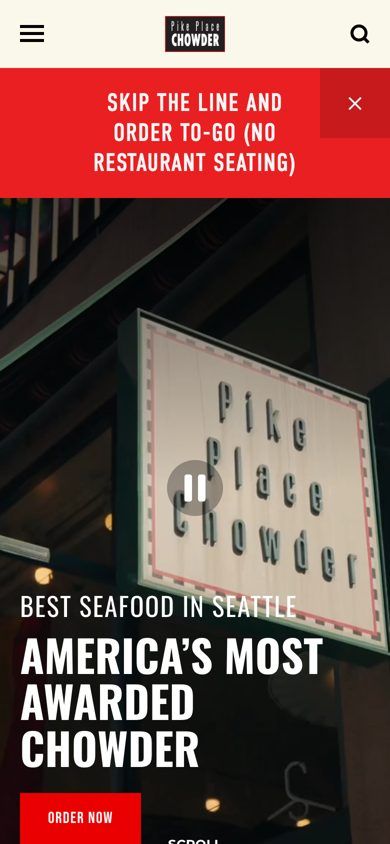</div><p class="note" style="font-size:13px;color:var(--mute);margin:8px 4px 0;line-height:1.35"><b style="color:var(--ink)">one-item shop.</b> Their real sign photo with one claim under it in big type.</p></figure><figure class="phone"><figcaption><span class="name">11. Bakery Nouveau</span><a class="go" href="https://www.bakerynouveau.com" target="_blank" rel="noopener">Open</a></figcaption><div class="frame">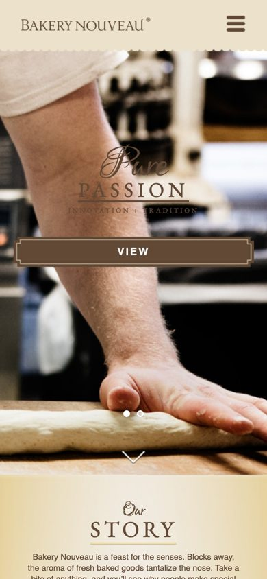</div><p class="note" style="font-size:13px;color:var(--mute);margin:8px 4px 0;line-height:1.35"><b style="color:var(--ink)">neighborhood bakery.</b> Hands at work, script overlay, one button. Craft as the opener.</p></figure><figure class="phone"><figcaption><span class="name">12. Slave to the Needle</span><a class="go" href="https://www.slavetotheneedle.com" target="_blank" rel="noopener">Open</a></figcaption><div class="frame">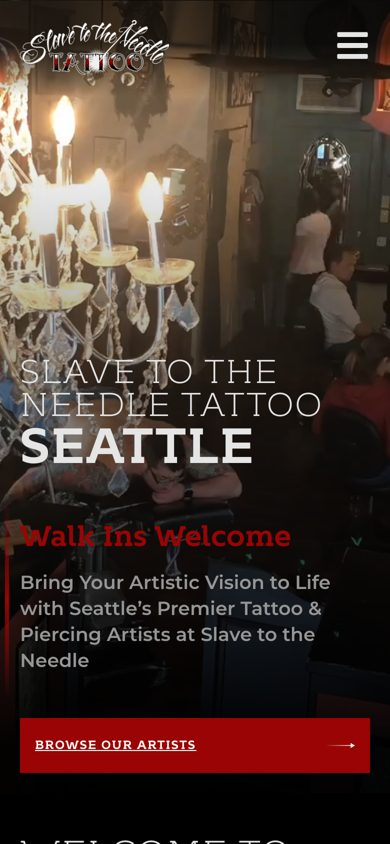</div><p class="note" style="font-size:13px;color:var(--mute);margin:8px 4px 0;line-height:1.35"><b style="color:var(--ink)">Seattle tattoo shop.</b> Chandelier and room, name in caps, one line. Tattoo shop that reads premium.</p></figure><figure class="phone"><figcaption><span class="name">13. The Walrus and the Carpenter</span><a class="go" href="https://www.thewalrusbar.com" target="_blank" rel="noopener">Open</a></figcaption><div class="frame">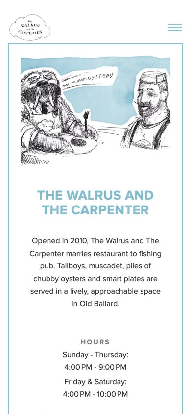</div><p class="note" style="font-size:13px;color:var(--mute);margin:8px 4px 0;line-height:1.35"><b style="color:var(--ink)">oyster bar, illustration hero.</b> Their own illustration on cream, hours right under. Calm, no photo.</p></figure><figure class="phone"><figcaption><span class="name">14. Kick Axe</span><a class="go" href="https://www.kickaxe.com" target="_blank" rel="noopener">Open</a></figcaption><div class="frame">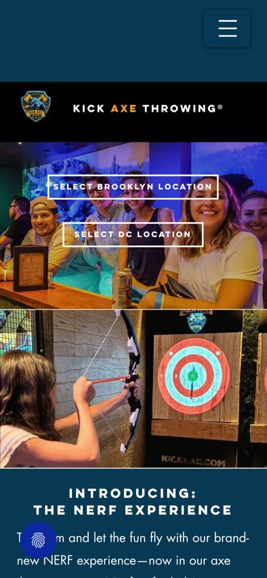</div><p class="note" style="font-size:13px;color:var(--mute);margin:8px 4px 0;line-height:1.35"><b style="color:var(--ink)">axe bar, badge on color.</b> Badge on a solid color, photos stacked under. Simplest of all.</p></figure><figure class="phone"><figcaption><span class="name">15. Pizzeria Beddia</span><a class="go" href="https://www.pizzeriabeddia.com" target="_blank" rel="noopener">Open</a></figcaption><div class="frame">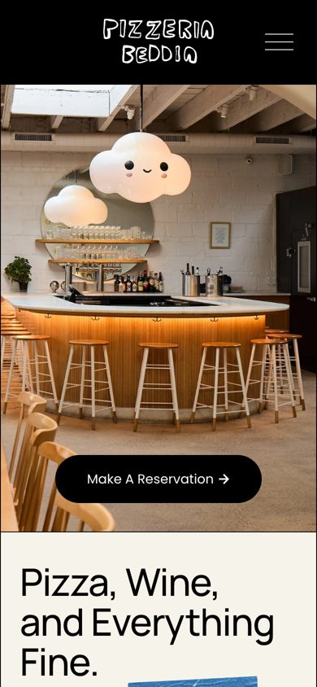</div><p class="note" style="font-size:13px;color:var(--mute);margin:8px 4px 0;line-height:1.35"><b style="color:var(--ink)">Philly pizza, type-led.</b> Room photo with a fun object in it, then a type-only band. Two beats.</p></figure></div></main>